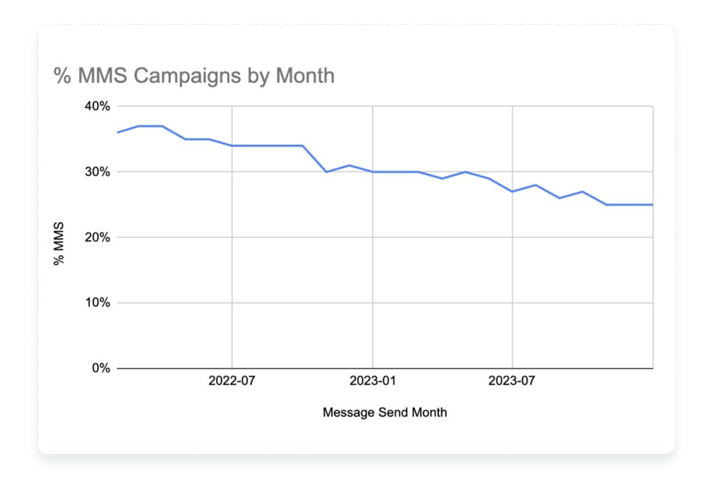
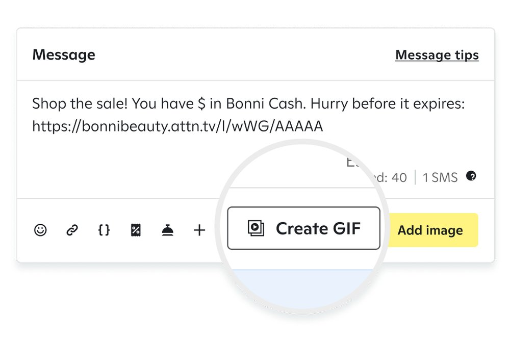
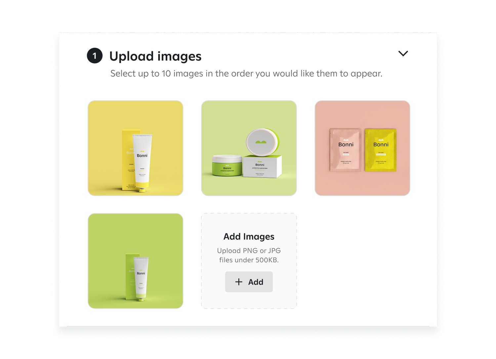
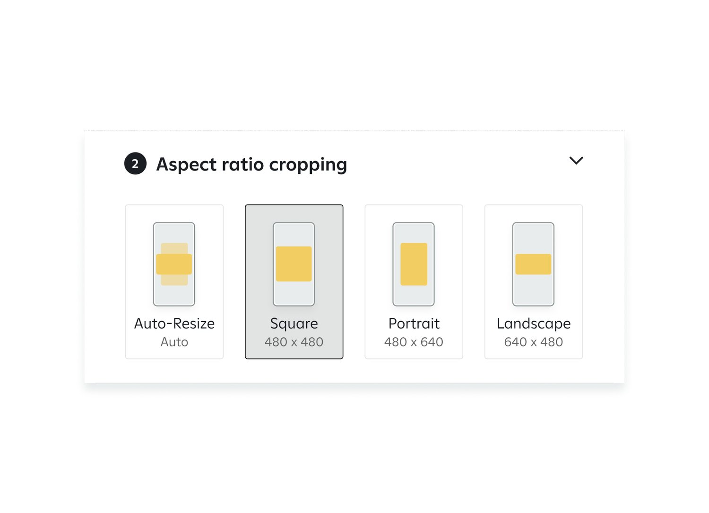
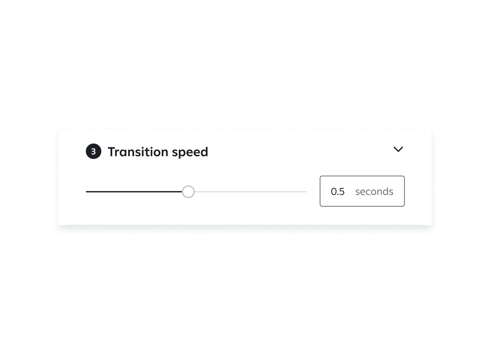
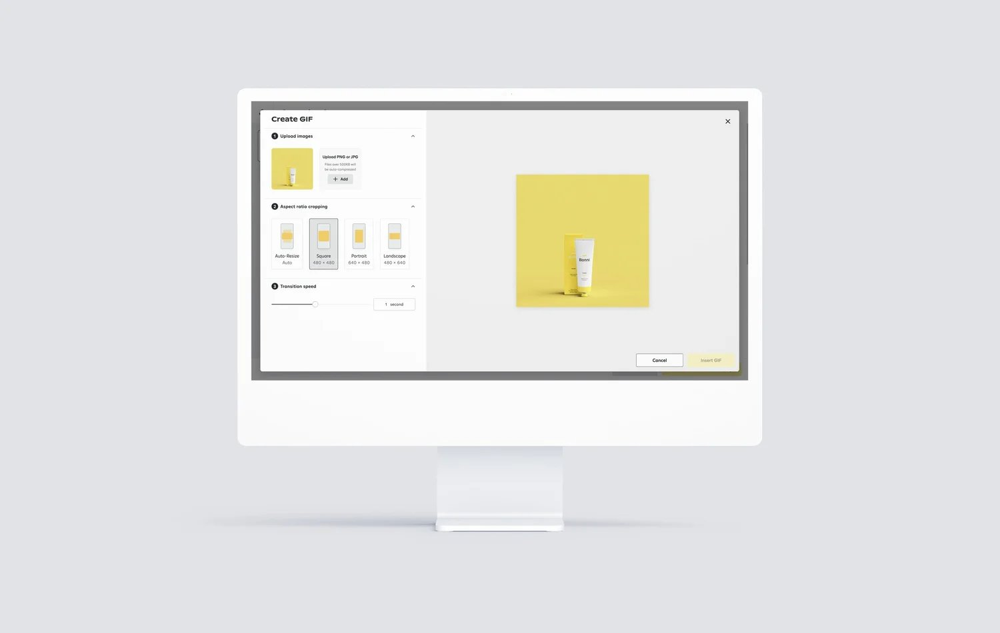

Problem
Brands were shifting budget from MMS to SMS to cut message costs. The share of campaigns sent as MMS fell from about 37% in early 2022 to 25% by the end of 2023. Making MMS worth the cost meant making rich media easy to create.

Goals
- Increase MMS send volume by giving users engaging media tools.
- Monetize the increase in media usage to drive revenue growth.
Projected solution
An integrated, easy media creator for GIFs, images, and videos. Every MMS send with rich media contributes directly to revenue, while brands get richer, more personalized campaigns and better ROI.

The design journey
We kicked off in January 2024 with product, design, and engineering working side by side in frequent workshops. Design went from early concepts to high-fidelity prototypes by March, and engineering shipped the tool in May.
Constraints
Carriers cap MMS file sizes. We limited the number of images per GIF and optimized file sizes so output stays high quality and always deliverable.

Making it easy
Clients shouldn't have to worry about matching image ratios or sizes. Users can crop and resize with presets for square, horizontal, portrait, and auto ratio, all guaranteed to send.

Allowing customization
We gave clients as much control as engineering limits allowed, especially over transitions. Multiple transition speeds fit different campaigns and support accessibility and personal preference.

Business impact
The GIF maker reversed the decline in MMS sends and created a new revenue stream. Customizable, easy tools improved engagement, satisfaction, and retention for the brands using it.

- +86%
- growth in MMS sends over the holidays, the busiest season of the year